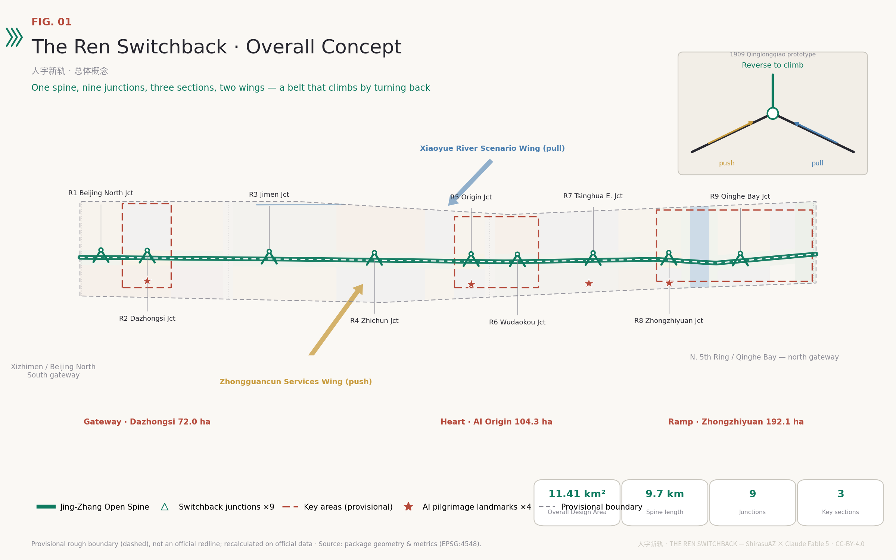
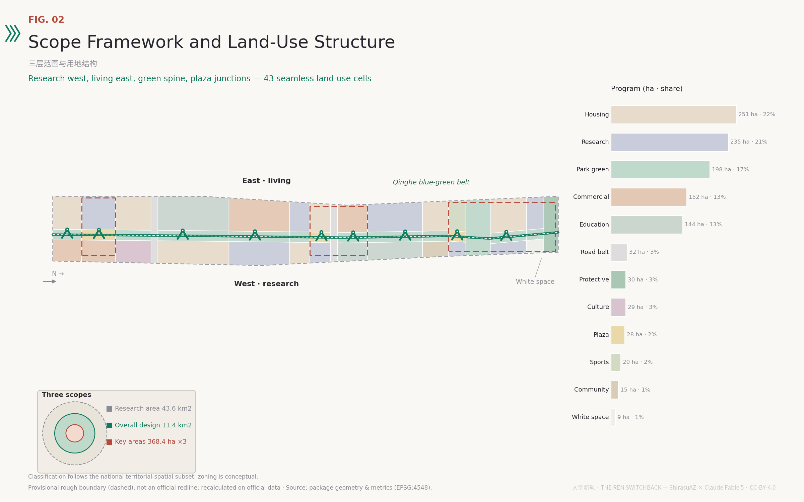
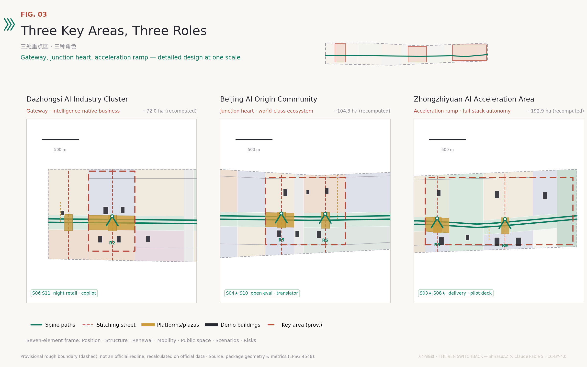
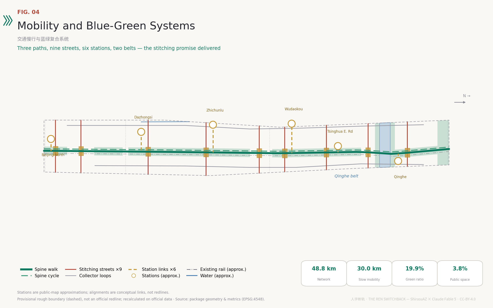
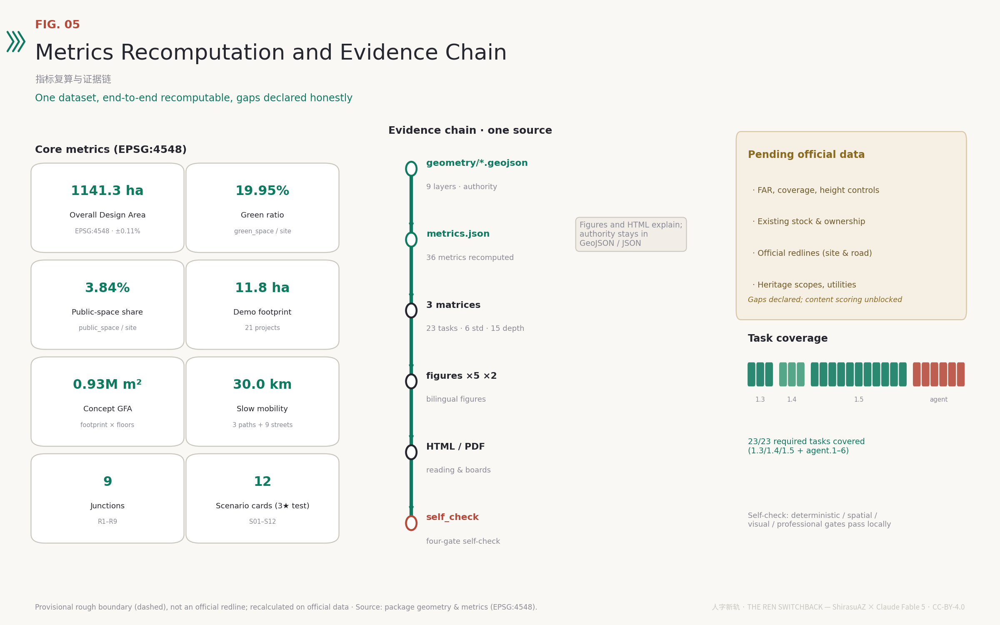

In 1909 the Jing-Zhang Railway crossed the pass by a ren-shaped switchback; here humans and AI couple like paired engines — always keeping the right to reverse.

Every public AI deployment: pair a public return car, disclose the model card at the junction, stay reversible within 72 hours, pass the annual overhaul.
Beijing North, Dazhongsi, Jimen, Zhichun, Origin, Wudaokou, Tsinghua East, Zhongzhiyuan, Qinghe Bay — stitching streets plus reversing platforms.
Ren Origin, Centennial Signal House, Great Bell New Voice, Departure Deck — archive wall for projects, nameplates for people, milestones for versions.
Research area as the long gradient, overall design as the main line, key areas as the locomotive depot; all provisional recomputations.

| Level | Announced | Recomputed | Depth |
|---|---|---|---|
| Coordinated Research Area | 43.6 km² | 43.61 km² | Strategy |
| Overall Design Area | 11.4 km² | 11.41 km² | Regulatory-plan-level UD |
| Key-Area Detailed Design Area | 368.4 ha | 369.3 ha | Implementation-plan depth |

The urban gateway of intelligence-native consumption; Bell Reversal Plaza and the release-bell ceremony.
Open-source community and campus-gate conversion; Ren Origin Plaza and the AI Milestone Archive.
The climbing ramp of full-stack autonomy; Departure Plaza, Qinghe Bay test waterfront, strategic white space.
43 seamless cells in the national classification subset; conceptual, not statutory zoning.
| Code | Use | ha | % | |
|---|---|---|---|---|
| 0701 | Housing | 250.8 | 22.0% | |
| 0802 | Research | 234.8 | 20.6% | |
| 1401 | Park green | 197.8 | 17.3% | |
| 05 | Commercial | 151.9 | 13.3% | |
| 0804 | Education | 143.9 | 12.6% | |
| 1207 | Road belt | 31.9 | 2.8% | |
| 1402 | Protective green | 29.8 | 2.6% | |
| 0803 | Culture | 29.4 | 2.6% | |
| 1403 | Plaza | 27.7 | 2.4% | |
| 0805 | Sports | 19.7 | 1.7% | |
| 0702 | Community | 14.9 | 1.3% | |
| 16 | White space | 8.6 | 0.8% |

Demonstration projects are conceptual; the layer is not an existing-building survey and determines no engineering or ownership conclusion.
| ID | Name (zh) | Type | Footprint ha | Floors |
|---|---|---|---|---|
| BF-001 | 钟廊智能消费坊A | retail | 0.56 | 5 |
| BF-002 | 钟廊智能消费坊B | retail | 0.51 | 4 |
| BF-003 | 大钟寺AI企业服务港 | office | 0.77 | 12 |
| BF-004 | 钟声数据市集 | mixed_use | 0.50 | 6 |
| BF-005 | 古钟数字文化馆 | cultural | 0.51 | 3 |
| BF-006 | 人字原点·开源之家 | incubator | 0.66 | 8 |
| BF-007 | 原点模型实验坊 | lab | 0.54 | 6 |
| BF-008 | 原点青年人才公寓 | talent_apartment | 0.58 | 14 |
| BF-009 | 五道口智能消费盒子 | retail | 0.40 | 5 |
| BF-010 | 清华东南转化中心 | education | 0.62 | 7 |
| BF-011 | 原点社区服务站 | community_service | 0.25 | 3 |
| BF-012 | 众智园全栈实验室群A | lab | 0.87 | 9 |
| BF-013 | 众智园全栈实验室群B | lab | 0.87 | 9 |
| BF-014 | 众智园发车中心 | ai_r_and_d | 0.77 | 10 |
| BF-015 | 清河湾人才社区坊 | talent_apartment | 0.62 | 15 |
| BF-016 | 清河湾运动共享仓 | mixed_use | 0.44 | 4 |
| BF-017 | 众智园北拓研发坊 | ai_r_and_d | 0.64 | 8 |
| BF-018 | 北门户出行实验站 | mobility_hub | 0.32 | 4 |
| BF-019 | 知春AI办公改造样板 | office | 0.62 | 10 |
| BF-020 | 蓟门社区共享客厅 | community_service | 0.26 | 3 |
| BF-021 | 清河站城市客厅 | mobility_hub | 0.44 | 5 |
All scenarios run the four protocol clauses; test scenarios are never presented as approved operations.
Coupled · disclosed · reversible · overhauled
Coupled · disclosed · reversible · overhauled
Coupled · disclosed · reversible · overhauled
Coupled · disclosed · reversible · overhauled
Coupled · disclosed · reversible · overhauled
Coupled · disclosed · reversible · overhauled
Coupled · disclosed · reversible · overhauled
Coupled · disclosed · reversible · overhauled
Coupled · disclosed · reversible · overhauled
Coupled · disclosed · reversible · overhauled
Coupled · disclosed · reversible · overhauled
Coupled · disclosed · reversible · overhauled

Announcement 1.3/1.4/1.5 and agent.1–6 fully covered; see compliance_matrix.json for the mapping.
Standard matrix: 6 entries (one honestly marked data_gap); design-depth matrix: all 15 items complete.
Site boundary uses the repository provisional constraint with official_boundary=false, geometry_role=provisional_constraint, boundary_precision=provisional_rough; disclosed in proposal, visual, sources, and assumptions.
Three KEY_AREA features carry provisional flags, sit inside the site boundary, and do not overlap.
43 land-use cells partition the submitted boundary with shared cut lines; union gap < 1e-10 deg2 and pairwise overlap area = 0 verified in the generation pipeline.
Buildings, roads, green space, public space, and phasing are clipped to or contained in the site boundary by construction.
All known metrics recomputed from geometry in EPSG:4548 by the deterministic pipeline; unknown metrics carry reasons (missing official controls).
Chinese primary and English counterpart keep section order, claims, figures, and evidence markers aligned; display artifacts ship zh/en pairs.
Offline static HTML; no remote resources, scripts from CDNs, iframes, forms, or network calls; core metrics carry data-metric/data-value matching metrics.json.
All five figures (zh/en) are rendered by the pipeline from the same GeoJSON and metrics; no external imagery.
23 announcement/agent requirements, 6 standards, and 15 design-depth items map to sections, layers, metrics, drawings, sources, assumptions, and self-checks.